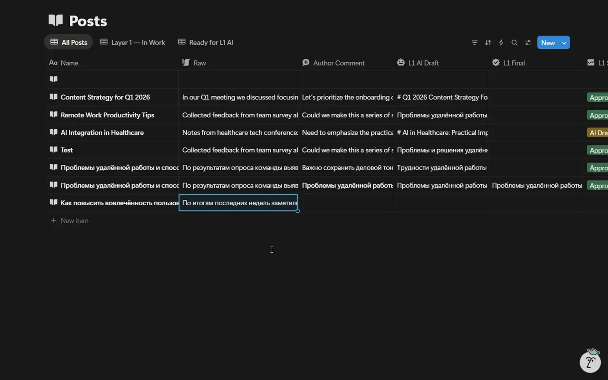

Редакционный процесс, в котором черновик проходит отдельные этапы подготовки. Теперь в кейсе есть подлинная запись рабочего интерфейса Notion.
Исходный текст попадает в поле Raw записи Posts.
В базе видны Author Comment и L1 AI Draft.
L1 Final заполняется, статус меняется на Drafted by AI.
Ниже — фрагмент исходной записи Никиты. Для публичного показа убраны звук, панель аккаунта и рабочий стол. Сам интерфейс и последовательность действий сохранены.

Запись подтверждает Notion-часть проекта. Canvas n8n, конфигурация nodes и Telegram-сценарий в ней отсутствуют; их не заменяем схемой или вымышленным dashboard. Четыре слоя описаны в найденной спецификации, но этот ролик показывает только первый.